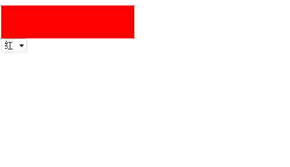
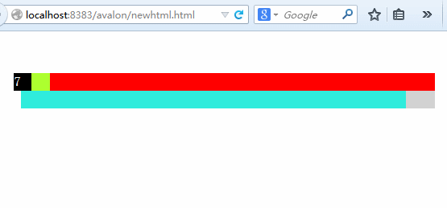
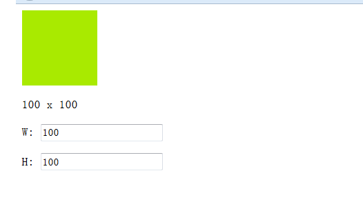

样式操作(ms-css)
一般情况下我们通过设置类名就可以改变元素的样式，但涉及到动画部分，就一定需要设置内联样式了，因此有了ms-css。
ms-css的用法为ms-css-样式名="样式值"，
如ms-css-width=”prop”(会自动补px)，ms-css-height=”{{prop}}%”,
ms-css-color=”prop”, ms-css-background-color=”prop”,
ms-css-background-image=”url({{imageUrl}})”,
ms-css-font-size=”{{prop}}px”。细细联想，ms-css与ms-class的旧风格、
ms-data、ms-attr的用法相仿，属性名接第三个参数作为name，属性值作为value。
注意，这里的样式名不能带厂商前缀，如ms-css--webkit-animation="xxx"是错误的
<!DOCTYPE html>
<html>
<head>
<meta http-equiv="Content-Type" content="text/html; charset=UTF-8" />
<script src="avalon.js"></script>
<script>
var vm = avalon.define({
$id: "test",
background: "red"
})
vm.$watch("background", function(v) {
vm.background = v
})
</script>
</head>
<body>
<div ms-controller="test">
<div style="width:200px; height:50px" ms-css-background="background">
</div>
<select ms-duplex="background">
<option value="red">红</option>
<option value="yellow">黄</option>
<option value="green">绿</option>
</select>
</div>
</body>
</html>
<!DOCTYPE html>
<!DOCTYPE html>
<html>
<head>
<meta http-equiv="Content-Type" content="text/html; charset=UTF-8">
<script src="avalon.js"></script>
<script>
var vm = avalon.define({
$id: "test",
percent: 0
})
var a = true
var id = setInterval(function() {
if (a) {
if (vm.percent < 100) {
vm.percent++
} else {
a = false
}
} else {
if (vm.percent > 0) {
vm.percent--
} else {
a = true
}
}
}, 100)
</script>
<style>
.handerx {
width: 20px;
height: 20px;
position: absolute;
color: #fff;
background: #000;
}
.sliderx {
width: 100%;
height: 20px;
position: relative;
}
.body {
padding: 40px;
}
</style>
</head>
<body ms-controller="test" class="body">
<div class="slider" style="background:red;">
<div class="handerx" ms-css-left="{{percent}}%">{{percent}}</div>
<div style="background: greenyellow;height:20px" ms-css-width="{{percent}}%"></div>
</div>
<div class="sliderx" style="background:#d2d2d2;">
<div style="background: #2FECDC;height:20px" ms-css-width="{{100-percent}}%"></div>
</div>
</body>
</html>
<!DOCTYPE html>
<html>
<head>
<title>ms-css</title>
<meta http-equiv="Content-Type" content="text/html; charset=UTF-8">
<meta http-equiv="X-UA-Compatible" content="IE=edge" />
<script src="../avalon.js"></script>
<script>
var vm = avalon.define({
$id: "test",
w: 100,
h: 100,
click: function() {
vm.w = parseFloat(vm.w) + 10;
vm.h = parseFloat(vm.h) + 10;
}
})
</script>
</head>
<body>
<div ms-controller="test">
<div style=" background: #a9ea00;" ms-css-width="w" ms-css-height="h" ms-click="click"></div>
<p>{{ w }} x {{ h }}</p>
<p>W:
<input type="text" ms-duplex="w" data-duplex-event="change" />
</p>
<p>H:
<input type="text" ms-duplex="h" />
</p>
</div>
</body>
</html>
ms-css已经在内部帮你处理好兼容问题，如opacity在旧式IE下用滤镜替换， tranform的私有前缀添加什么的。 最后要注意一点，属性值不能加入CSS hack与important!